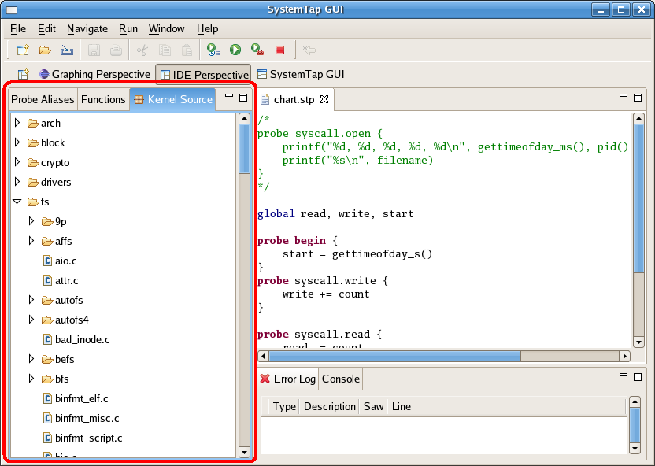

Table of Contents > Concepts
Kernel Source Browser
The Kernel Source Browser is used to display the kernel tree. This provides you with a quick way to locate places to add probes. Any file in the Kernel Source tree can be opened by double clicking on it. This will open up the selected file in the Editor view. You can then double click on the ruler next to any line that you wish to probe. If SystemTap can probe that line a probe point will be inserted at the end of the script you were most recently working on. If the line can't be probed, an error message will be displayed.
